Logo — gear ring + LED · four variants · regenerable from script
Light · LED blue
primary
Light · amber
warm alternate

Dark · LED blue
with halo

Dark · amber
with halo
Lightbulb alternate still ships. The gear is now generated from a script (12 teeth, equal spacing, smooth fillets) so it can be re-cut at any size or tooth count without redrawing by hand. Both blue and amber LED variants exist in light and dark modes; the dark variants include a soft halo so the LED reads as lit.